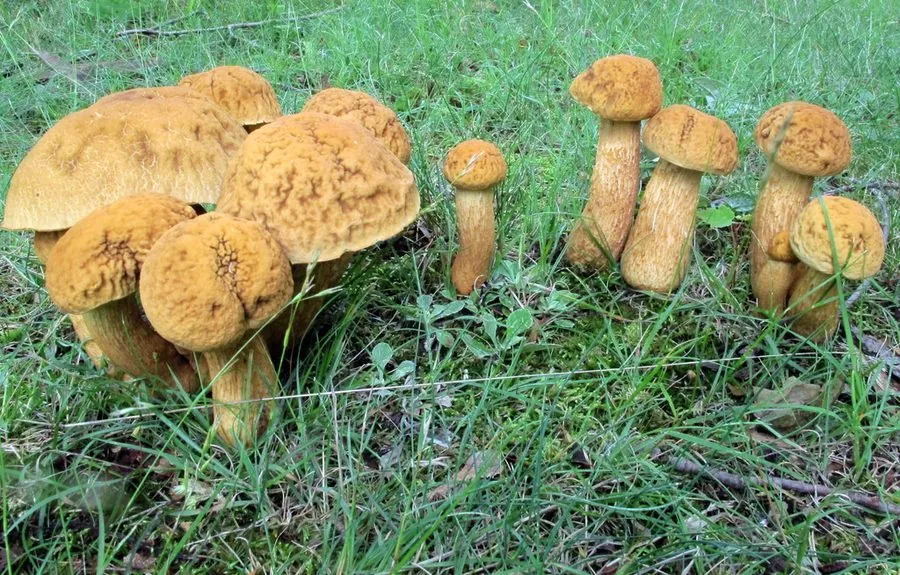

真菌 · 真菌界
皱盖牛肝菌 Leccinum rugosiceps

牛肝菌科食用菌，菌盖黄褐而明显皱缩、菌柄密布黑色小疣，夏秋生于阔叶林地上，须彻底熟透后食用。
- 分类
- 门担子菌门纲伞菌纲目牛肝菌目科牛肝菌科属疣柄牛肝菌属
- 栖息环境
- 栎、栗等阔叶林地上，与树木形成外生菌根
- 地理分布
- 中国华东、华中、西南及东亚地区分布较广
- 保护级别
- 暂无评估；野生资源受采集压力影响
物种志
皱盖牛肝菌的菌盖直径 5–15 厘米，初期半球形，后平展，表面黄褐至橙褐色，明显皱缩、凹凸不平，湿时黏。菌肉白色至淡黄，伤后变暗。菌管层淡黄至黄绿色，管口小，近圆形。菌柄长 6–12 厘米，直径 1.5–3 厘米，表面密布黑色至黑褐色小疣点，基部稍膨大。孢子印橄榄褐色，孢子纺锤形。
皱盖牛肝菌生于栎、栗等阔叶林地上，与树木形成外生菌根，夏秋 7–10 月发生。它是常见的食用牛肝菌，菌肉厚、味道鲜美，可炒食、炖汤或干制，但必须彻底煮熟，且不宜与酒同食。疣柄牛肝菌属的部分种类生食可引起胃肠不适，个别种类还有溶血风险。采食时需与有毒的牛肝菌区分：凡菌管层红色、伤后迅速变蓝、菌柄有红色网纹者，应谨慎辨识，不可贸然食用。
形态与习性
- 菌盖直径 5–15 厘米，黄褐色，表面皱缩
- 菌管淡黄至黄绿色，管口小而圆
- 菌柄长 6–12 厘米，密布黑色小疣点
- 孢子印橄榄褐色，孢子纺锤形
- 生境栎、栗林地上，夏秋与树木共生
- 食用性菌肉厚味鲜，须彻底煮熟，忌与酒同食
趣味知识
- 皱盖牛肝菌的菌柄上布满黑色小疣点，这是疣柄牛肝菌属的标志性特征。
- 它的菌盖表面皱缩不平，像被揉过的牛皮纸，因此得名“皱盖”。
- 牛肝菌类必须彻底煮熟，生食或半生食可能引起胃肠不适甚至溶血。
- 采食牛肝菌要避开菌管鲜红、伤后急变蓝的种类，那往往是毒菌的信号。